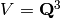

Navigation
- index
- next |
- previous |
- Sage Tutorial v4.3 »

本教程中，假定你是用 sage 命令打开Sage解释器的。 这将启动一个定制后的IPython shell，并导入很多函数和类， 可以从命令行随时调用它们。通过修改 $SAGE_ROOT/ipythonrc 文件可以定制更多的内容。启动Sage后，你看到的输出和下面的类似：
----------------------------------------------------------------------
| SAGE Version 3.1.1, Release Date: 2008-05-24 |
| Type notebook() for the GUI, and license() for information. |
----------------------------------------------------------------------
sage:
要退出Sage，按Ctrl+D，或者输入 quit 或 exit.
sage: quit
Exiting SAGE (CPU time 0m0.00s, Wall time 0m0.89s)
这里wall time是把表挂到墙上开始计算的时间。这是相关的， 因为CPU时间没有跟踪子进程如GAP或Singular所用的时间。
(可以从终端用 kill -9 结束一个Sage进程， 但是Sage不会结束子进程，如Maple过程， 或清理 $HOME/.sage/tmp 中的临时文件。)
会话(session)是你从启动Sage到退出的输入、输出序列。 Sage通过IPython记录所有的Sage输入。 事实上，如果你用的是交互命令行（而不是notebook界面）， 那么任何时候你都可以输出 %hist 来得到所有输入行的列表。 你可以输入 ？ 查看更多关于IPython的信息。如， “IPython offers numbered prompts ... with input and output caching. All input is saved and can be retrieved as variables (besides the usual arrow key recall). The following GLOBAL variables always exist (so don’t overwrite them!)”:
_: previous input (interactive shell and notebook)
__: next previous input (interactive shell only)
_oh : list of all inputs (interactive shell only)
这是一个例子：
sage: factor(100)
_1 = 2^2 * 5^2
sage: kronecker_symbol(3,5)
_2 = -1
sage: %hist #This only works from the interactive shell, not the notebook.
1: factor(100)
2: kronecker_symbol(3,5)
3: %hist
sage: _oh
_4 = {1: 2^2 * 5^2, 2: -1}
sage: _i1
_5 = 'factor(ZZ(100))\n'
sage: eval(_i1)
_6 = 2^2 * 5^2
sage: %hist
1: factor(100)
2: kronecker_symbol(3,5)
3: %hist
4: _oh
5: _i1
6: eval(_i1)
7: %hist
在本教程和其他Sage文档中，我们省略了输出结果的编号。
你还可以将会话中的输入列表保存到一个宏中。
sage: E = EllipticCurve([1,2,3,4,5])
sage: M = ModularSymbols(37)
sage: %hist
1: E = EllipticCurve([1,2,3,4,5])
2: M = ModularSymbols(37)
3: %hist
sage: %macro em 1-2
Macro `em` created. To execute, type its name (without quotes).
sage: E
Elliptic Curve defined by y^2 + x*y + 3*y = x^3 + 2*x^2 + 4*x + 5 over
Rational Field
sage: E = 5
sage: M = None
sage: em
Executing Macro...
sage: E
Elliptic Curve defined by y^2 + x*y + 3*y = x^3 + 2*x^2 + 4*x + 5 over
Rational Field
当使用交互命令行时，任何UNIX的shell命令都可以从Sage中执行， 但是命令前面要加上感叹号 !. 例如，
sage: !ls
auto example.sage glossary.tex t tmp tut.log tut.tex
返回当前目录的文件列表。
PATH 变量中有Sage可执行文件的目录信息，所以执行 gp, gap, singular, maxima, 等， 可以开始运行这些软件包含在Sage中的那个版本。
sage: !gp
Reading GPRC: /etc/gprc ...Done.
GP/PARI CALCULATOR Version 2.2.11 (alpha)
i686 running linux (ix86/GMP-4.1.4 kernel) 32-bit version
...
sage: !singular
SINGULAR / Development
A Computer Algebra System for Polynomial Computations / version 3-0-1
0<
by: G.-M. Greuel, G. Pfister, H. Schoenemann \ October 2005
FB Mathematik der Universitaet, D-67653 Kaiserslautern \
记录(logging)你的Sage会话与保存(saving)它(参见 保存和读取完整的会话) 不是一个意思。要记录输入（记录输出是可选的），使用 logstart 命令。输入 logstart? 查看更多信息。可以用这个命令记录所有的输入， 输出，甚至在将来的会话中重放这些输入（简单的重新载入记录文件即可）。
was@form:~$ sage
----------------------------------------------------------------------
| SAGE Version 3.0.2, Release Date: 2008-05-24 |
| Type notebook() for the GUI, and license() for information. |
----------------------------------------------------------------------
sage: logstart setup
Activating auto-logging. Current session state plus future input saved.
Filename : setup
Mode : backup
Output logging : False
Timestamping : False
State : active
sage: E = EllipticCurve([1,2,3,4,5]).minimal_model()
sage: F = QQ^3
sage: x,y = QQ['x,y'].gens()
sage: G = E.gens()
sage:
Exiting SAGE (CPU time 0m0.61s, Wall time 0m50.39s).
was@form:~$ sage
----------------------------------------------------------------------
| SAGE Version 3.0.2, Release Date: 2008-05-24 |
| Type notebook() for the GUI, and license() for information. |
----------------------------------------------------------------------
sage: load "setup"
Loading log file <setup> one line at a time...
Finished replaying log file <setup>
sage: E
Elliptic Curve defined by y^2 + x*y = x^3 - x^2 + 4*x + 3 over Rational
Field
sage: x*y
x*y
sage: G
[(2 : 3 : 1)]
如果你是在Linux KDE中使用 konsole 终端，那么你可以这样保存会话： 在 konsole 中启动Sage后，选择 “settings”，再选“history...”， 再选“set unlimited”。当你准备要保存会话时，选择“edit”再选 “save histor as...”并输入文件名把会话保存到你的电脑上。 保存后，你可以在编辑器中重新载入并打印。
假设你在读一个Sage或Python的会话，你想把它们复制到Sage中。 但是提示符 >>>` 或 sage: 很讨厌。 实际上你可以复制并粘贴一个例子到Sage中，包含提示符也没关系。 或者说，Sage的分词器默认的跳过 >>>` 或 sage: 提示符。例如，
sage: 2^10
1024
sage: sage: sage: 2^10
1024
sage: sage: 2^10
1024
如果将 %time 放在输入行的开始， 那么命令执行的时间会显示在命令的输出之后。 例如，我们可以比较几种不同求幂运算的时间。 下面的时间在不同的电脑和不同的Sage版本中可能很不一样。 首先看原始Python的计算时间：
sage: %time a = int(1938)^int(99484)
CPU times: user 0.66 s, sys: 0.00 s, total: 0.66 s
Wall time: 0.66
这表示总共用了0.66秒，“Wall time”即你墙上的时间也是0.66秒。 如果你的电脑还在运行很多其他的程序，那么wall time可能比CPU时间多很多。
下面我们查看用Sage的整数类型计算指数的时间，它是用Cython调用GMP库实现的。
sage: %time a = 1938^99484
CPU times: user 0.04 s, sys: 0.00 s, total: 0.04 s
Wall time: 0.04
使用PARI的C语言接口：
sage: %time a = pari(1938)^pari(99484)
CPU times: user 0.05 s, sys: 0.00 s, total: 0.05 s
Wall time: 0.05
GMP稍微好一点（跟预期的一样，因为Sage内置的PARI调用了GMP的整数运算）。
还可以象下面这样使用 cputime 命令来查看程序块的运行时间。
sage: t = cputime()
sage: a = int(1938)^int(99484)
sage: b = 1938^99484
sage: c = pari(1938)^pari(99484)
sage: cputime(t) # somewhat random output
0.64
sage: cputime?
...
Return the time in CPU second since SAGE started, or with optional
argument t, return the time since time t.
INPUT:
t -- (optional) float, time in CPU seconds
OUTPUT:
float -- time in CPU seconds
walltime 命令和 cputime 命令类似，只是它计算的是wall time.
我们还能计算Sage中包含的其他计算机代数系统的运算能力。 下面的例子中，每个系统我们都先执行一个无关紧要的命令来启动相应程序。 最相关的时间是wall time. 然而，如果wall time和CPU时间差的较多时， 说明有可能存在性能方面的差异。
sage: time 1938^99484;
CPU times: user 0.01 s, sys: 0.00 s, total: 0.01 s
Wall time: 0.01
sage: gp(0)
0
sage: time g = gp('1938^99484')
CPU times: user 0.00 s, sys: 0.00 s, total: 0.00 s
Wall time: 0.04
sage: maxima(0)
0
sage: time g = maxima('1938^99484')
CPU times: user 0.00 s, sys: 0.00 s, total: 0.00 s
Wall time: 0.30
sage: kash(0)
0
sage: time g = kash('1938^99484')
CPU times: user 0.00 s, sys: 0.00 s, total: 0.00 s
Wall time: 0.04
sage: mathematica(0)
0
sage: time g = mathematica('1938^99484')
CPU times: user 0.00 s, sys: 0.00 s, total: 0.00 s
Wall time: 0.03
sage: maple(0)
0
sage: time g = maple('1938^99484')
CPU times: user 0.00 s, sys: 0.00 s, total: 0.00 s
Wall time: 0.11
sage: gap(0)
0
sage: time g = gap.eval('1938^99484;;')
CPU times: user 0.00 s, sys: 0.00 s, total: 0.00 s
Wall time: 1.02
这个测试中，GAP和Maxima最慢（使用 sage.math.washington.edu 这台机子）。 由于pexpect接口的开销，将这些与Sage进行比较可能是不公平的。
当出错时，你通常会看到Python的“异常”（exception）。 Python甚至试图指出什么原因导致异常。你经常见到异常的名字， 如 NameError 或 ValueError （参见Python参考手册 [Py] 中的完整异常列表）。例如，
sage: 3_2
------------------------------------------------------------
File "<console>", line 1
ZZ(3)_2
^
SyntaxError: invalid syntax
sage: EllipticCurve([0,infinity])
------------------------------------------------------------
...
TypeError: Unable to coerce Infinity (<class 'sage...Infinity'>) to Rational
有时候交互的debugger对于除错非常有用。 你可以使用 %pdb 打开或关闭它（默认是关闭的）。 如果引发了一个异常，并且debugger是打开的，会出现提示符 ipdb>. 在debugger中，你可以输出任何局部变量的状态，上下移动执行的栈。例如，
sage: %pdb
Automatic pdb calling has been turned ON
sage: EllipticCurve([1,infinity])
---------------------------------------------------------------------------
<type 'exceptions.TypeError'> Traceback (most recent call last)
...
ipdb>
在提示符 ipdb> 中输入 ? 可以得到debugger的命令列表：
ipdb> ?
Documented commands (type help <topic>):
========================================
EOF break commands debug h l pdef quit tbreak
a bt condition disable help list pdoc r u
alias c cont down ignore n pinfo return unalias
args cl continue enable j next pp s up
b clear d exit jump p q step w
whatis where
Miscellaneous help topics:
==========================
exec pdb
Undocumented commands:
======================
retval rv
按Ctrl+D或输入 quit 返回Sage.
首先新建一个三维向量空间 :
sage: V = VectorSpace(QQ,3)
sage: V
Vector space of dimension 3 over Rational Field
也可以用下面的简洁形式：
sage: V = QQ^3
输入一个命令的开头，再按 Ctrl-p （或者按上箭头）， 就可以回溯输入过的所有以这几个字母开头的命令行。 就算是你退出了Sage再重新启动，也能这样用。这一功能用到了 readline 包，基本上所有流行的Linux发行版中都能用。
要列出来  的所有成员函数是很容易的，只要用tab键。
输入 V. 再按键盘上的 [tab key] 键。
的所有成员函数是很容易的，只要用tab键。
输入 V. 再按键盘上的 [tab key] 键。
sage: V.[tab key]
V._VectorSpace_generic__base_field
...
V.ambient_space
V.base_field
V.base_ring
V.basis
V.coordinates
...
V.zero_vector
如果你输入一个命令的开头几个字母，再按 [tab key], 可以得到所有以这些字母开头的命令的列表。
sage: V.i[tab key]
V.is_ambient V.is_dense V.is_full V.is_sparse
如果要查一个具体的函数，如coordinates函数，输入 V.coordinates? 查看帮助，或者输入 V.coordinates?? 查看源码。下一节还会讲。
Sage拥有集成帮助系统。输入函数名加一个问号“?”，可以查看函数相关的文档。
sage: V = QQ^3
sage: V.coordinates?
Type: instancemethod
Base Class: <type 'instancemethod'>
String Form: <bound method FreeModule_ambient_field.coordinates of Vector
space of dimension 3 over Rational Field>
Namespace: Interactive
File: /home/was/s/local/lib/python2.4/site-packages/sage/modules/f
ree_module.py
Definition: V.coordinates(self, v)
Docstring:
Write v in terms of the basis for self.
Returns a list c such that if B is the basis for self, then
sum c_i B_i = v.
If v is not in self, raises an ArithmeticError exception.
EXAMPLES:
sage: M = FreeModule(IntegerRing(), 2); M0,M1=M.gens()
sage: W = M.submodule([M0 + M1, M0 - 2*M1])
sage: W.coordinates(2*M0-M1)
[2, -1]
如上所示，输出结果告诉你对象的类型，在哪个文件中被定义， 以及一些有用的描述和例子，例子都可以复制到当前的会话中执行。 几乎所有这些例子都经过正规的自动测试，以保证其能够正常运行。
Sage的另外一个非常符合开源精神的功能是，如果 f 是一个Python函数，那么输入 f?? 就会显示定义 f 的源码。 如：
sage: V = QQ^3
sage: V.coordinates??
Type: instancemethod
...
Source:
def coordinates(self, v):
"""
Write $v$ in terms of the basis for self.
...
"""
return self.coordinate_vector(v).list()
这就告诉我们 coordinates 所做的工作就是调用 coordinate_vector 函数并将结果输出到一个列表中。 coordinate_vector 做了什么？
sage: V = QQ^3
sage: V.coordinate_vector??
...
def coordinate_vector(self, v):
...
return self.ambient_vector_space()(v)
coordinate_vector 函数将它的输入代到环绕空间，
这会影响 中  的系数向量的计算。
空间 已经是环绕的，因为它是 .
子空间也有 coordinate_vector 函数，但是是不同的。
我们新建一个子空间看看：
的系数向量的计算。
空间 已经是环绕的，因为它是 .
子空间也有 coordinate_vector 函数，但是是不同的。
我们新建一个子空间看看：
sage: V = QQ^3; W = V.span_of_basis([V.0, V.1])
sage: W.coordinate_vector??
...
def coordinate_vector(self, v):
"""
...
"""
# First find the coordinates of v wrt echelon basis.
w = self.echelon_coordinate_vector(v)
# Next use transformation matrix from echelon basis to
# user basis.
T = self.echelon_to_user_matrix()
return T.linear_combination_of_rows(w)
（如果你觉得这个实现不够有效，请帮助优化线性代数。）
你还可以输入 help(command_name) 或 help(class) 来得到给定类的帮助。
sage: help(VectorSpace)
Help on class VectorSpace ...
class VectorSpace(__builtin__.object)
| Create a Vector Space.
|
| To create an ambient space over a field with given dimension
| using the calling syntax ...
:
:
当你输入 q 以退出帮助系统时，你的会话跟你进来的时候一样。 帮助系统的输出不会象 function_name? 那样搞乱你的会话。 输入 help(module_name) 特别有效。例如， 向量空间定义在 sage.modules.free_module 中， 输入 help(sage.modules.free_module) 可以查看整个模块的文档。 当使用帮助系统查看文档时，可以输入 / 进行查找， 或输入 ? 进行反向查找。
假设你正在计算一个矩阵，或是模块化的符号空间，你想保存下来以后再用。 应该怎么做？计算机代数系统有以下几种方法保存个人的对象。
因为Sage使用的是Python，它用一种不同的方式实现， 每一个对象都可以序列化，即，转换为字符串以便将来恢复。 这跟PARI中统一的I/O的想法是类似的，只是在屏幕输出时不那么复杂。 保存和读取（在多数情况下）是自动进行的，不需要额外编程。 这是Python从开始就支持的一个简单特性。
几乎所有的Sage对象x，都能用 save(x, filename) 以压缩格式保存到磁盘上 （或 x.save(filename) ）。读取时使用 load(filename).
sage: A = MatrixSpace(QQ,3)(range(9))^2
sage: A
[ 15 18 21]
[ 42 54 66]
[ 69 90 111]
sage: save(A, 'A')
你现在可以退出Sage并重启。然后你可以把 A 找回来：
sage: A = load('A')
sage: A
[ 15 18 21]
[ 42 54 66]
[ 69 90 111]
对于其他更复杂的对象，如椭圆曲线，也可以这么做。 所有与对象有关的数据都会保存下来。如，
sage: E = EllipticCurve('11a')
sage: v = E.anlist(100000) # takes a while
sage: save(E, 'E')
sage: quit
保存下来的 E 有153KB，因为它保存了前100000个 .
~/tmp$ ls -l E.sobj
-rw-r--r-- 1 was was 153500 2006-01-28 19:23 E.sobj
~/tmp$ sage [...]
sage: E = load('E')
sage: v = E.anlist(100000) # instant!
(在Python中，保存和读取是使用 cPickle 模块实现的。 特别的，一个Sage对象 x 可以通过 cPickle.dumps(x, 2) 保存。 注意 2!)
Sage不能保存和读取其他计算机代数系统创建的个人对象，如，GAP， Singular，Maxima等。它们重载时标记为“无效”状态。 在GAP中，虽然很多对象的输出是一种可重构的形式，但是很多不行， 所以不能用它们的输出结果重构。
sage: a = gap(2)
sage: a.save('a')
sage: load('a')
...
ValueError: The session in which this object was defined is no longer
running.
GP/PARI的对象可以保存和读取，因为他们的输出形式足以重构。
sage: a = gp(2)
sage: a.save('a')
sage: load('a')
2
已保存的对象可以被不同的架构或操作系统的计算机读取，如， 你可以在32位的OS X机上保存一个大的矩阵，并在64位的Linux机上重新读入， 转为阶梯矩阵再移回去。多数情况下， 你甚至可以使用不同版本的Sage读取已保存的对象， 只要那个对象的代码差别不大。所有的属性与定义对象的类一起被保存下来 （但不是源码）。如果那个类在新版的Sage中不存在， 那么这个对象就不能在新版中被重新读取。但是你可以在老版本中读取， 连同对象的字典(x.__dict__)一起保存，再在新版中打开。
你可以把对象保存为ASCII文本格式，只需简单的打开一个文件并将字符串写入 （很多对象都可以这么做）。写完之后关闭文件。
sage: R.<x,y> = PolynomialRing(QQ,2)
sage: f = (x+y)^7
sage: o = open('file.txt','w')
sage: o.write(str(f))
sage: o.close()
Sage可以非常灵活的保存和读取会话。
命令 save_session(sessionname) 将所有当前会话中定义的变量保存为字典， 并以 sessionname 命名。(很少有变量不能保存的情况， 这时该变量就不保存到字典中去。) 会话保存到 .sobj 文件中， 可以象之前保存的那些对象一样重新读取。当你读取一个会话中的对象时， 你会得到一个字典，索引是变量的名字，值是对象。
你可以用 load_session(sessionname) 命令把定义在 sessionname 中的变量读取到当前会话。注意， 这不会清除你在当前会话中已经定义的那些变量；或者说，合并了两个会话。
首先我们打开Sage并定义一些变量。
sage: E = EllipticCurve('11a')
sage: M = ModularSymbols(37)
sage: a = 389
sage: t = M.T(2003).matrix(); t.charpoly().factor()
_4 = (x - 2004) * (x - 12)^2 * (x + 54)^2
下面保存我们的会话，这将上面每一个变量都保存到一个文件中。 查看这个文件，大小是3K左右。
sage: save_session('misc')
Saving a
Saving M
Saving t
Saving E
sage: quit
was@form:~/tmp$ ls -l misc.sobj
-rw-r--r-- 1 was was 2979 2006-01-28 19:47 misc.sobj
最后我们重新启动Sage，定义另外一个变量，并把我们保存的会话读进来。
sage: b = 19
sage: load_session('misc')
Loading a
Loading M
Loading E
Loading t
每一个保存的变量都再次可用，而且变量 b 也没有被覆盖。
sage: M
Full Modular Symbols space for Gamma_0(37) of weight 2 with sign 0
and dimension 5 over Rational Field
sage: E
Elliptic Curve defined by y^2 + y = x^3 - x^2 - 10*x - 20 over Rational
Field
sage: b
19
sage: a
389
要启动Sage的notebook界面，在Sage命令行中输入
sage: notebook()
这将启动Sage的notebook界面，并打开默认浏览器查看它。 服务器的状态保存在 $HOME/.sage/sage_notebook.
其他的选项包括：
sage: notebook("directory")
这将使用指定目录中的文件开启一个新的notebook服务器。 当你想对特定项目指定一组工作表，或者同时运行几个独立的notebook服务器时， 这个操作非常有用。
当你启动notebook时，它先在 $HOME/.sage/sage_notebook 中新建如下文件：
nb.sobj (the notebook SAGE object file)
objects/ (a directory containing SAGE objects)
worksheets/ (a directory containing SAGE worksheets).
新建以上文件后，notebook启动一个web服务器。
一个“notebook”是一组用户帐号的集合，每个帐号都可以拥有任意数量的工作表。 当你新建一个工作表时，数据保存在 worksheets/username/number 目录。 每一个这样的目录里面都有一个纯文本文件 worksheet.txt. 如果你的工作表，或者Sage，或者别的什么，发生了什么事情， 都会记录在这个人工可读的文件中，以便于重构你的工作表。
在Sage中，输入 notebook? 查看更多关于如何启动notebook服务器的信息。
下面的示意图用来说明Sage的notebook的架构：
----------------------
| |
| |
| firefox/safari |
| |
| javascript |
| program |
| |
| |
----------------------
| ^
| AJAX |
V |
----------------------
| |
| sage | SAGE process 1
| web | ------------> SAGE process 2 (Python processes)
| server | pexpect SAGE process 3
| | .
| | .
---------------------- .
For help on a Sage command, cmd, in the notebook browser box, type cmd? and now hit <esc> (not <shift-enter>). 要得到Sage的 cmd 命令的帮助，在notebook的输入框中输入 cmd? 再按 <esc> (而不是 <shift-enter>)。
关于notebook快捷键的帮助，请点击 Help 链接。
| [Py] | The Python language http://www.python.org/ , Reference Manual http://docs.python.org/ref/ref.html |